L2 distance
Σ (B − Gshifted)²
L2 compares raw pixel intensities. The best alignment is the displacement with the smallest squared difference.
UC Berkeley · Fall 2026
Colorizing the Prokudin-Gorskii photo collection by aligning three separately captured blue, green, and red exposures.
View project ↓Overview
The digitized glass plates contain three grayscale exposures stacked vertically in B, G, R order. Each exposure records the same scene through a different color filter.
Because the exposures are slightly displaced, directly stacking them produces colored ghosting. I keep the blue channel fixed, estimate the translation of the green and red channels relative to blue, shift them, and then stack the aligned channels into an RGB image.
Part 1
For the low resolution JPEGs, I tried translations in ±15 pixel windows for a total of 900 translations and for each translation we then cropped the edges by 15 pixels which is the max shift and scored what was left using L2 and NCC methods and compared it to the cropped blue reference.
L2 distance
L2 compares raw pixel intensities. The best alignment is the displacement with the smallest squared difference.
Normalized cross-correlation
NCC removes each channel's mean intensity before comparison. The best alignment is the displacement with the largest correlation.

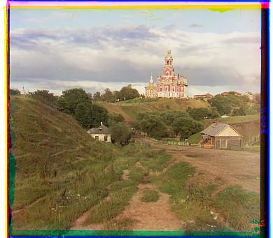
L2 offsets (dy, dx): G: (5, 2) · R: (12, 3)


L2 offsets (dy, dx): G: (-3, 2) · R: (3, 2)


L2 offsets (dy, dx): G: (3, 3) · R: (6, 3)
Part 2
The TIFF scans are much larger so doing the same search at full resolution would take a lot longer. I use anti aliasing to blur the image a little before downsizing and then scale each channel down by 2 until it is small enough to search. After finding the shift on the small image I send that information back up, double the shift for the next resolution and then only search around that local region instead of searching everything again.
At 1/8 resolution the shift we are searching for is only around an eighth of what it would be on the full image so we can find the general area much faster and then use that result when we go back up. The first search is a ±15 window which is about 900 translations and then each level going back up only searches a ±5 local window which is about 100 more translations, so for the pyramid shown here it is around 1200 searches per channel instead of doing one huge search on the full resolution image.
Provided data
The high resolution outputs below use pyramid NCC. The offsets are shown as (dy, dx).
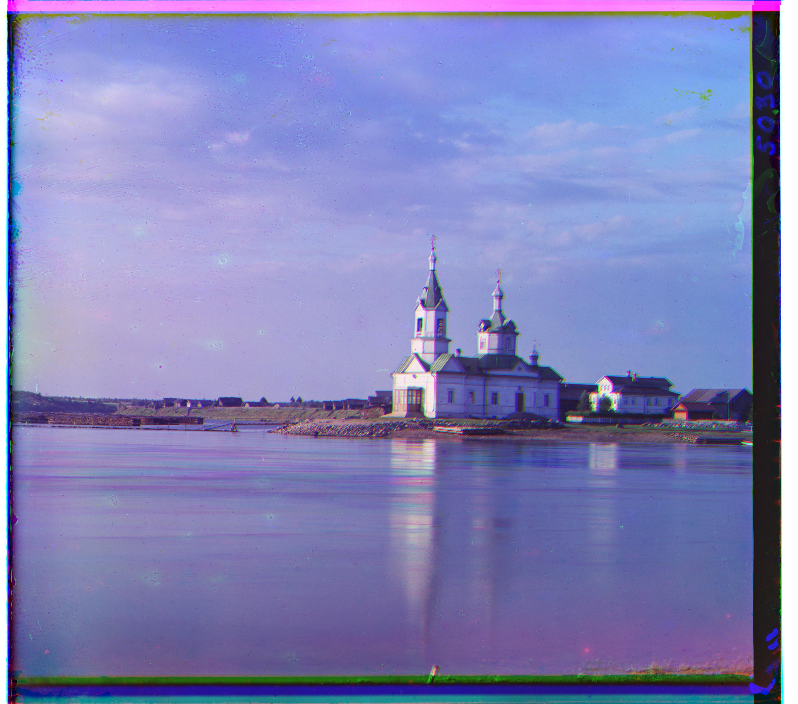
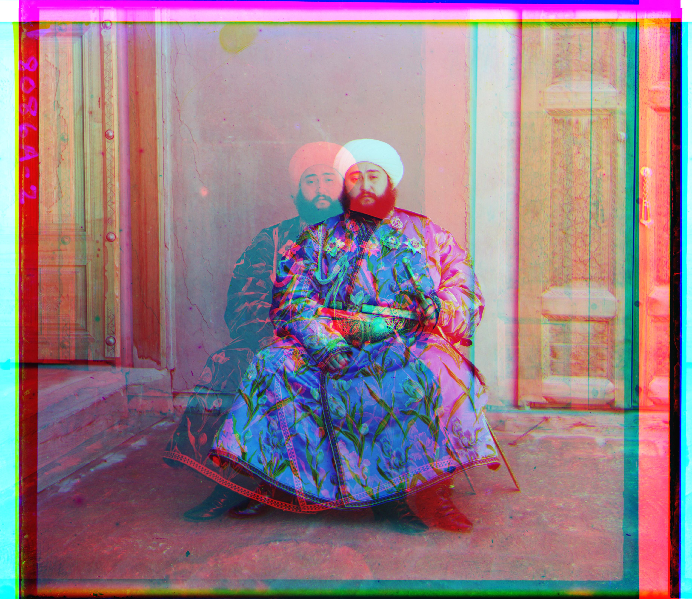
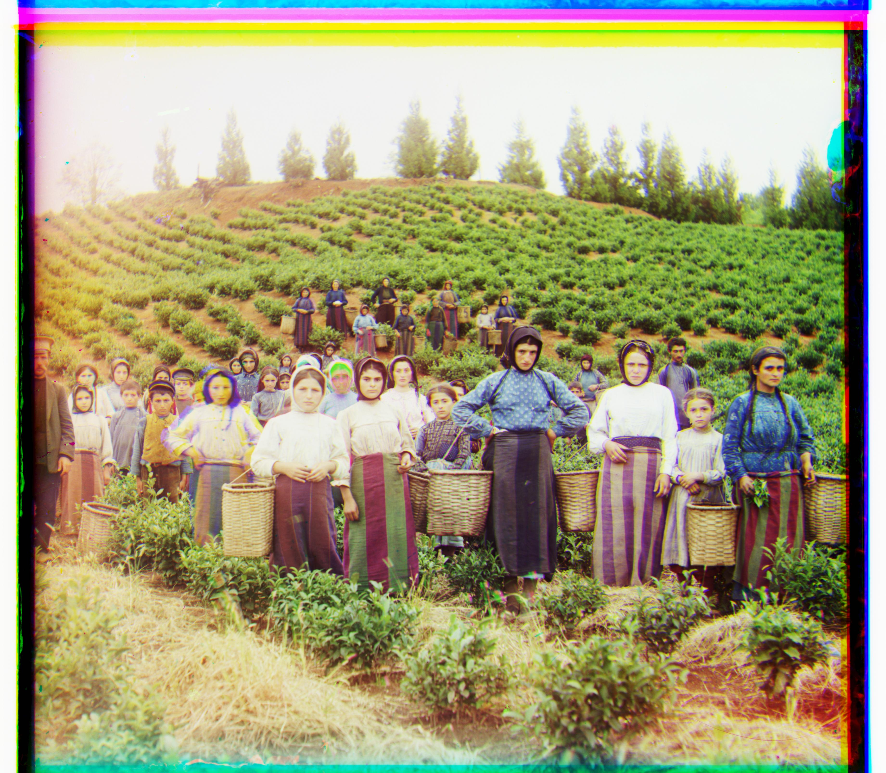
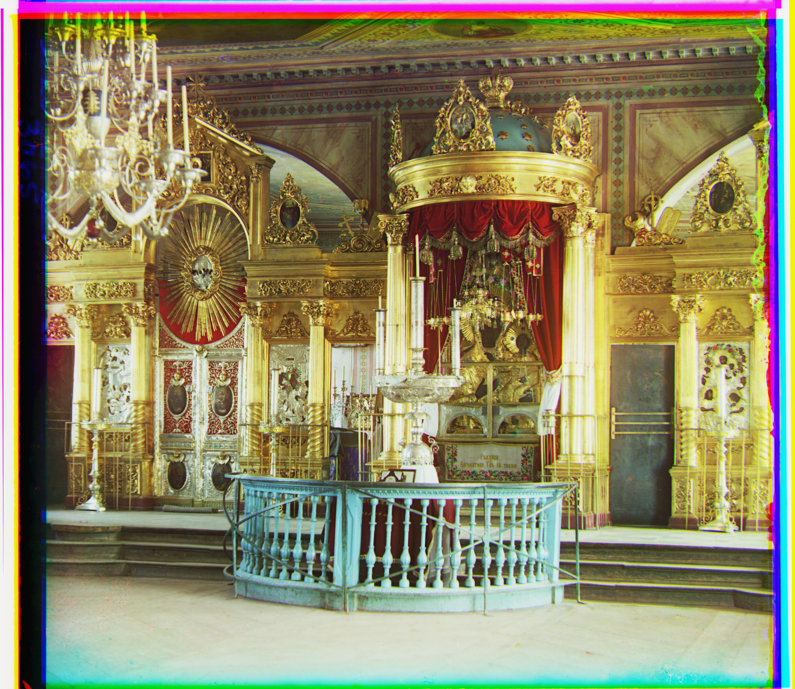
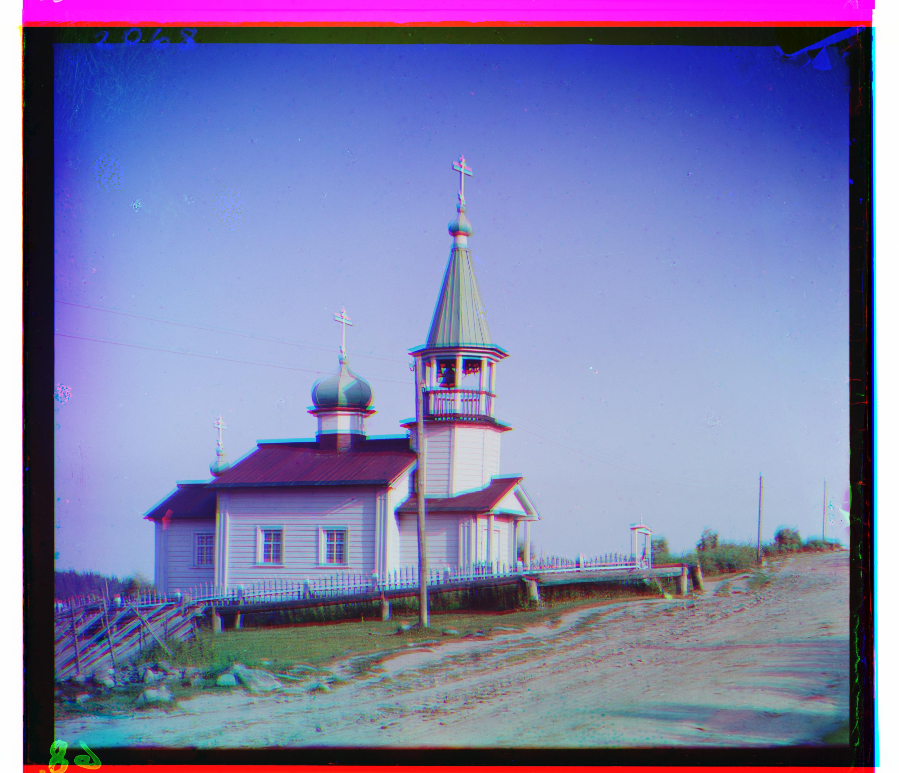
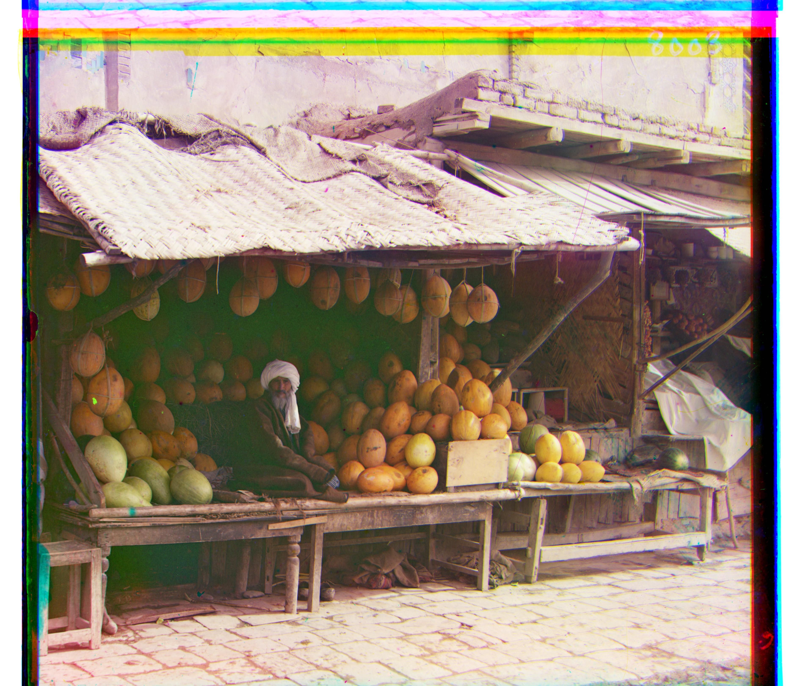

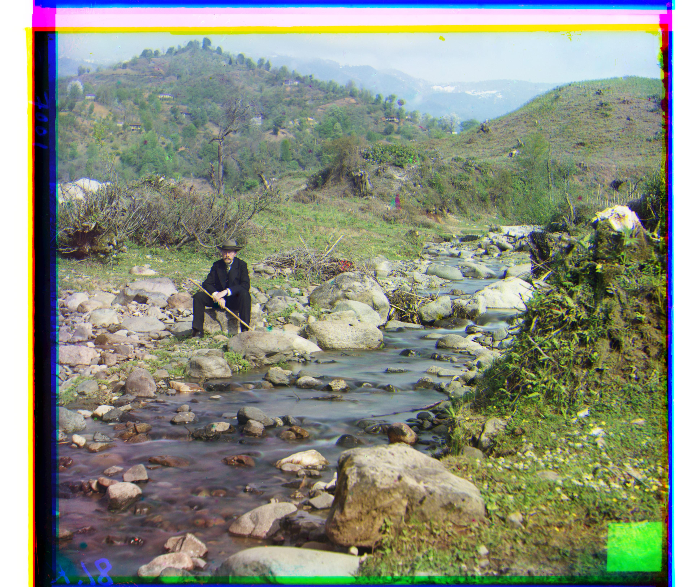

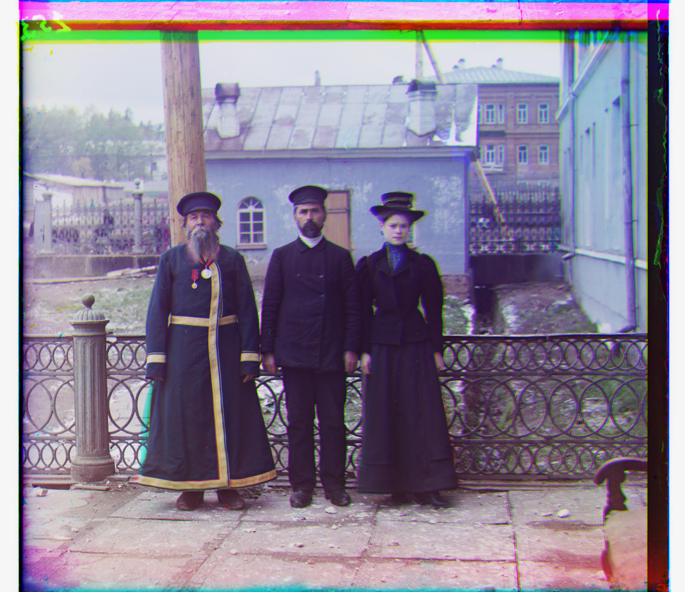

Failure analysis
Emir is the one image that did not work with my NCC alignment because the brightness between the red green and blue exposures is just too different especially on the clothes so even when the image gets closer to the right spot the pixels are not matching the same way they do on the other pictures and NCC ends up choosing the wrong shift.
I could probably fix this using edges or gradients instead of the actual pixel values because the edges should stay more similar between the channels but since the project allows one image to fail I just kept the normal NCC method I used for everything else and left this one as the failure.
Additional examples
I also tested the same pyramid NCC method on three additional glass plates I chose from the Prokudin-Gorskii collection using the same parameters as the other images.
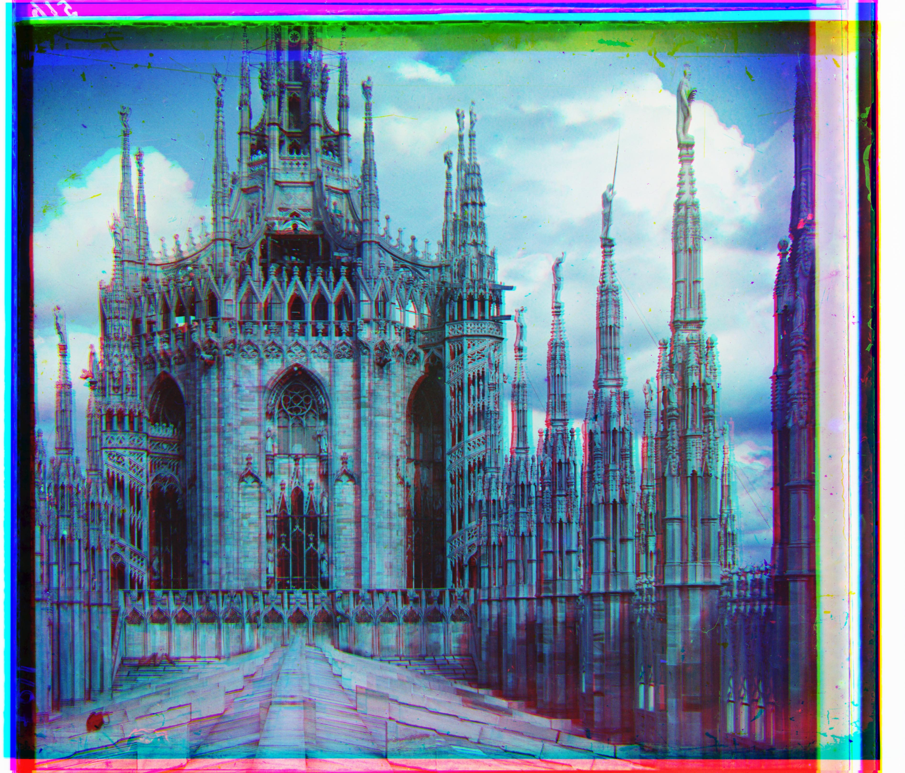
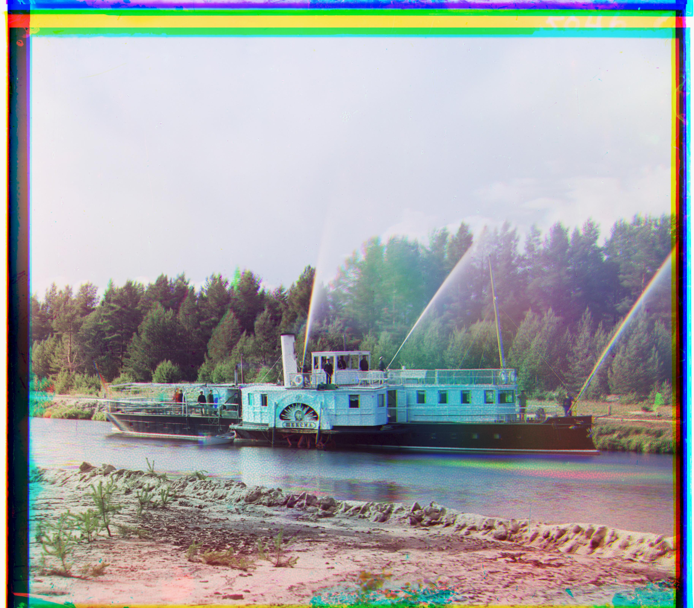
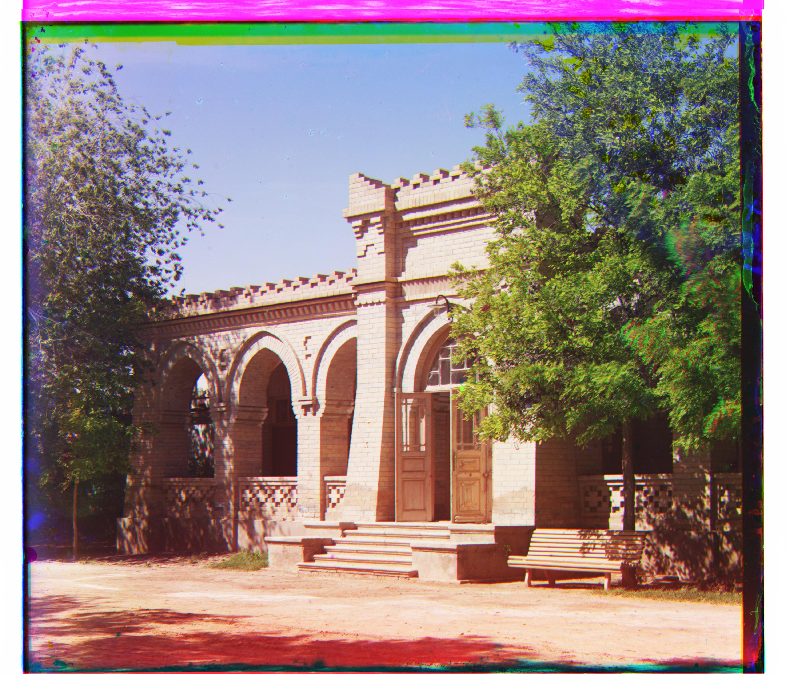